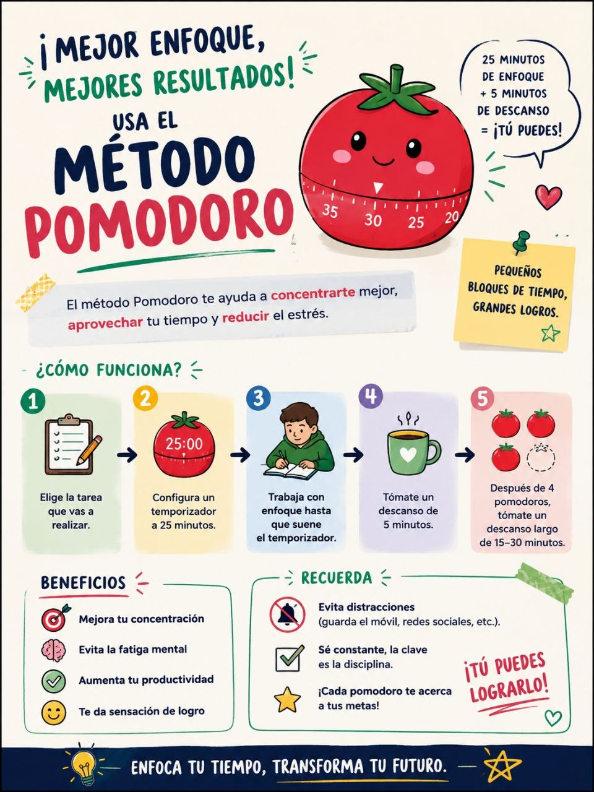

En las sesiones de 3 horas de Aplicaciones Ofimáticas con primero de Grado Medio de SMR, probamos una adaptación de la técnica Pomodoro que cambió por completo la dinámica del aula. Esta es nuestra experiencia.
El problema
Las sesiones de 3 horas son un reto tanto para el alumnado como para el docente. Pasado el primer hour, la concentración empieza a caer. Algunos alumnos se distraen con el móvil, otros empiezan a hablar, y la productividad se resiente. Necesitábamos una estructura que mantuviera el foco sin agotar a nadie.
La solución: Pomodoro adaptado
La técnica Pomodoro clásica propone intervalos de 25 minutos de trabajo con 5 minutos de descanso. Pero en un contexto de prácticas con Word y Excel, donde los alumnos necesitan tiempo para meterse en la tarea, adaptamos los tiempos:
Trabajo intensivo
Descanso activo
En una sesión de 3 horas (180 minutos) entran aproximadamente 4 ciclos completos, con un pequeño colchón al inicio para la explicación y al final para el cierre.
Las reglas del descanso
La clave del éxito fue establecer reglas claras para los descansos. Sin condiciones, los alumnos tienden a encender juegos o perderse en el móvil. Estas fueron nuestras normas:
- Pantallas apagadas — obligatorio. La excusa: descansar la vista después de tanto rato frente al monitor.
- Levantarse y estirar — nada de quedarse sentados. Un descanso activo ayuda a la circulación y despeja la mente.
- Hablar entre ellos — los primeros minutos del descanso son para socializar. Eso sí, cuando el temporizador vuelva a sonar, todos a sus puestos.
Consejo del docente
"Cuando empiezan a cansarse, les digo: 'Va, quedan solo X minutos, seguid focus y luego ya habláis'. Eso les da el empujón final para mantener la concentración hasta el descanso."
Resultados
El cambio fue notable. La productividad en las sesiones de 3 horas aumentó significativamente:
- Más concentración — los alumnos saben que tienen 35 minutos para avanzar y luego descansarán. Eso elimina la procrastinación.
- Menos agotamiento — los descansos activos evitan la fatiga visual y mental típica de las sesiones largas.
- Mejor ambiente — al tener momentos estructurados para hablar, las interrupciones durante el trabajo se redujeron casi a cero.
- Más autonomía — los alumnos aprenden a gestionar su tiempo y a autorregularse, una habilidad clave para su futuro profesional.
Infografía: la técnica en un vistazo
Aquí tienes un resumen visual de cómo aplicamos el Pomodoro en el aula. Puedes descargarla o proyectarla en clase para explicar la dinámica a tus alumnos.

¿Te animas a probarlo?
Esta experiencia es fácilmente replicable en cualquier materia con sesiones largas. Solo necesitas un temporizador visible para toda la clase y unas normas claras. Si lo pruebas, cuéntanos cómo te fue en nuestro canal de Telegram.